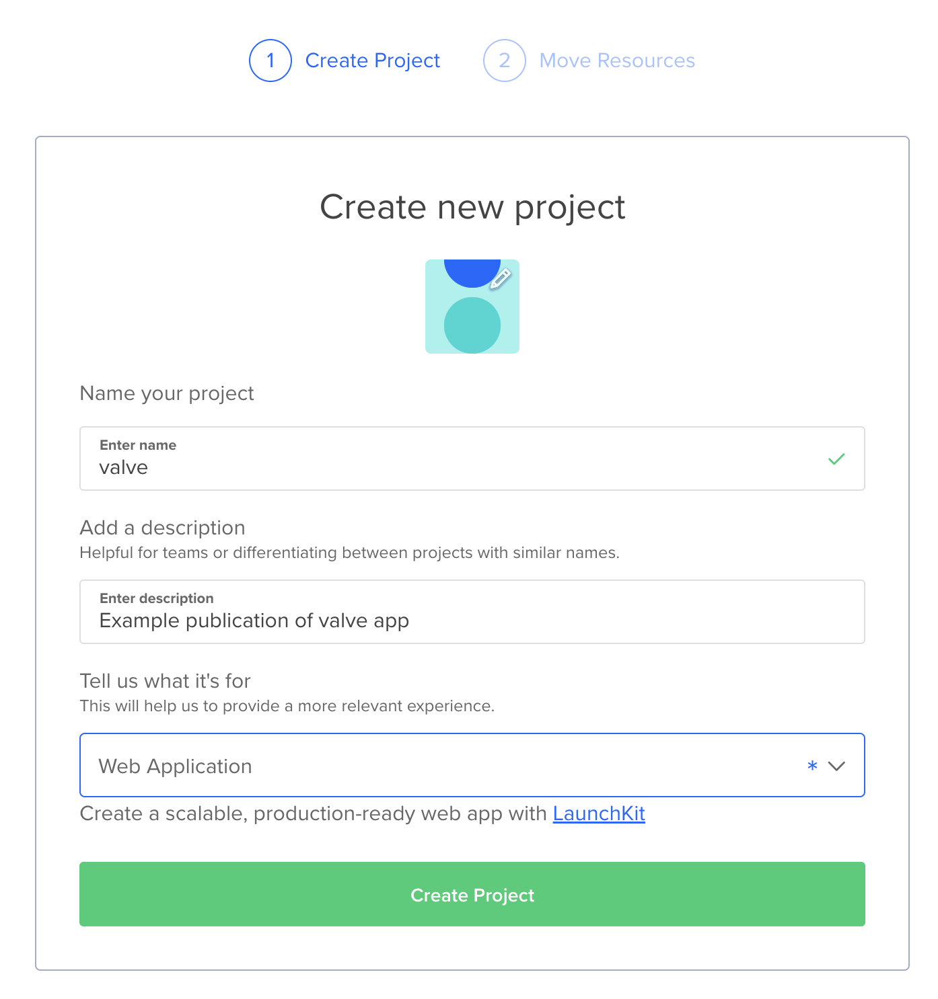
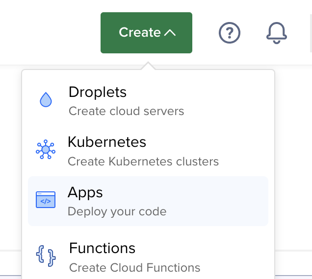
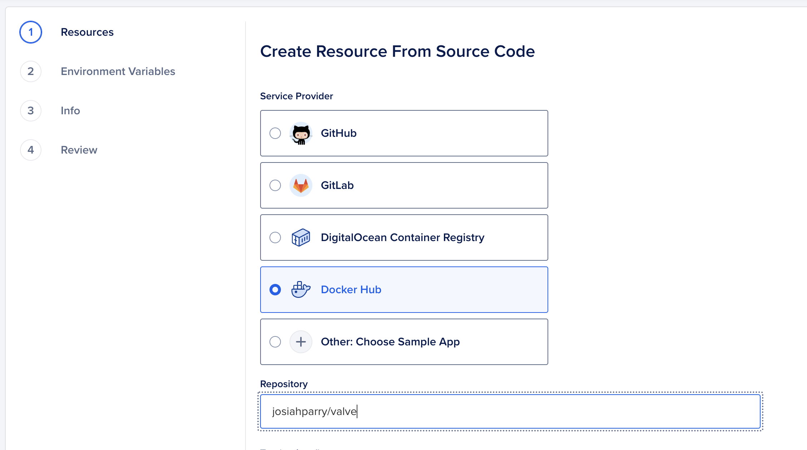
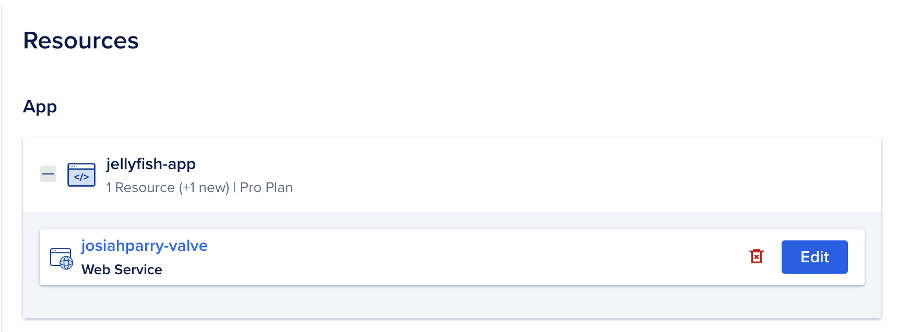
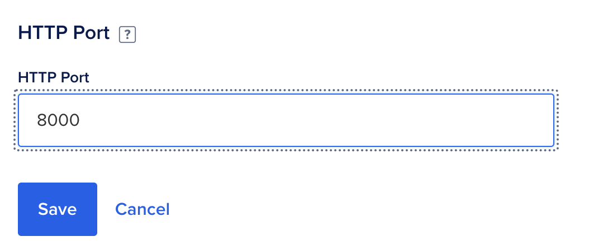
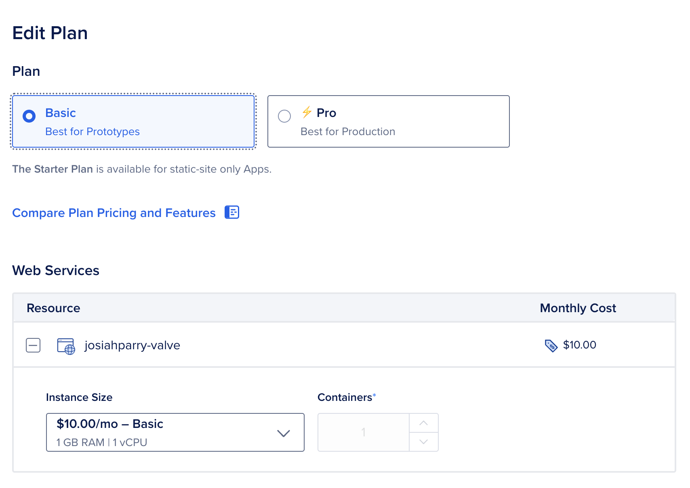

Deploy with DigitalOcean
Source:vignettes/articles/Deploy-with-DigitalOcean.Rmd
Deploy-with-DigitalOcean.RmdDigitalOcean is a simple web-services hosting site. Compared to AWS, GCP, and Azure, getting a service up and running on DigitalOcean is a breeze!
A live example of a Valve app hosted on DigitalOcean be accessed here.
To deploy a Valve app to DigitalOcean we need first make our app into
a Docker-based service. See Using
Valve with Docker for creating an appropriate Dockerfile. The source
code for the above example can be found in the /inst/docker
folder.
Building Docker Image
Always get the tough part out of the way first. In this case, that is building the Docker image. First, make sure that you have an account at Docker Hub. Ensure that you have Docker desktop installed—it makes the process a bit easier.
Navigate to the directory that has your Dockerfile. We
will build the Docker image with the following naming convention
{username}/{image-name}:{tag}. Following this convention
will make it a bit easier.
docker build -t ${USERNAME}/${IMAGE}:${VERSION} .
docker tag ${USERNAME}/${IMAGE}:${VERSION} ${USERNAME}/${IMAGE}:latestIn my case I ran the below to create an image under my username
josiahparry with the image name valve and the
tag stable. The . is important, because it
tells us that we’re building the Dockerfile in the current directory.
Afterwards, we tag that newly built image with the latest
tag. This build process can take a few minutes. Go fold some laundry,
wash some dishses, whatever might make you feel like you’re being
productive during this time.
docker build -t josiahparry/valve:stable .
docker tag josiahparry/valve:stable valve:latestIf you are using a Mac M1 or M2 chip / an arm-based machine, you’ll
need to build specifically for amd64. This is what I have
to use for my Mac M1.
docker buildx build --platform=linux/amd64 -t josiahparry/valve:latest .Publishing to Docker Hub
Open Docker Desktop. From there, sign
into Docker Hub by pressing the Sign In button on the
top right.

Now that you are signed in to the app, we can publish directly to Docker Hub. Find the image you build in the images section. Click the three dots for more menu options.

Deploying with DigitalOcean
Now that you have pushed your image to Docker Hub, we can easily deploy the application using DigitalOcean. Navigate to https://cloud.digitalocean.com and create an account.
From the cloud console we will start by creating a project.

Ensure that the project is a Web Application. After you
have created your project, we will need to create an application inside
of the project. Navigate to the Create button drop-down and
select App.

Now, choose Docker Hub in the
Create Resource from Source Code menu option. Under
repository, provide the name of your Docker image which follows the
patter username/image. In my case, that is
josiahparry/valve. You also have the option to provide a
specific tag to be used. Otherwise, the latest tag will be
used.

Press Next to continue. Now we need to edit the
application to use the correct port. This will be the port that is used
by Valve in your Dockerfile. The example Dockerfile uses
port 8000, so we need to change that.

Change the HTTP Port to the correct port that is used by
Valve. In my case, that is 8000.

Press Back to continue in the process.
Press Edit Plan to specify the size of the images you
want to use. In my case, I want to use a smaller and cheaper one. I’d
recommend to start as small as possible and monitor the behavior and CPU
usage before increasing the size of your images. Don’t pay for what
you’re not using!

After you have chosen the appropriate plan, go to Review
and press Create Resource. If, you are in review and you
see the option to modify your plan press Back. You will
then be able to create your resource.
Your app will now be built and deployed!